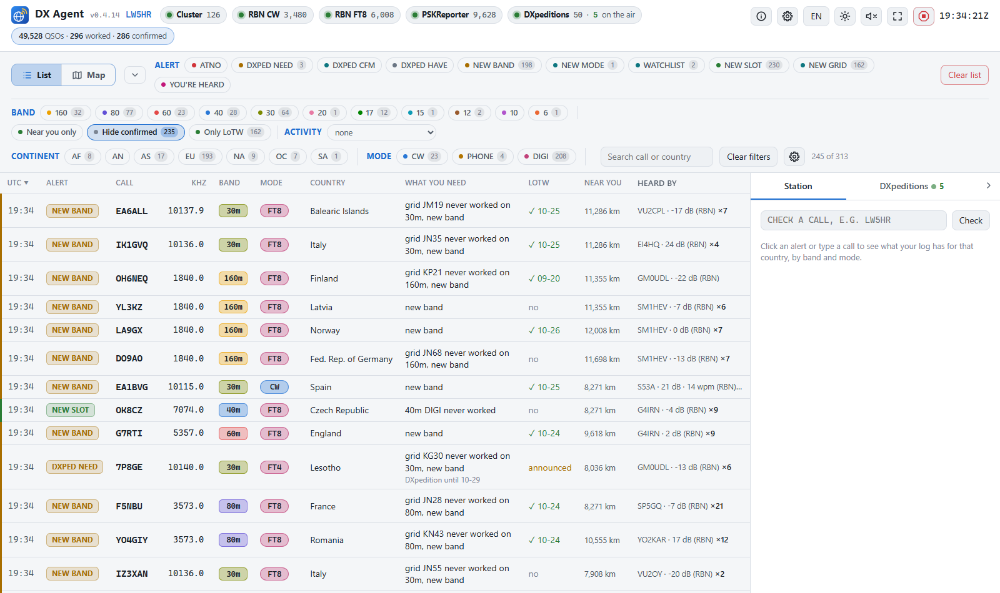
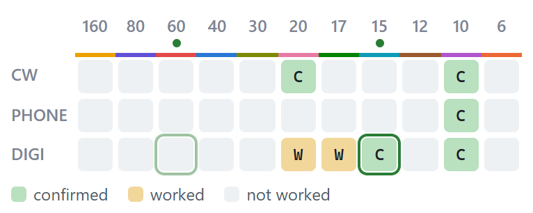
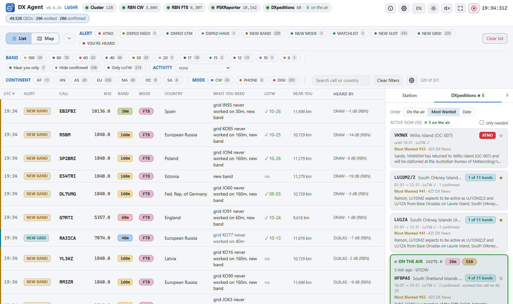
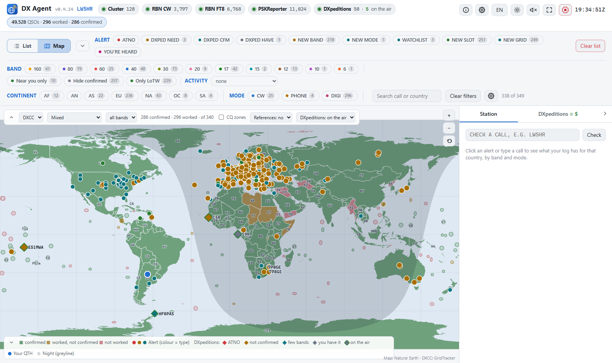
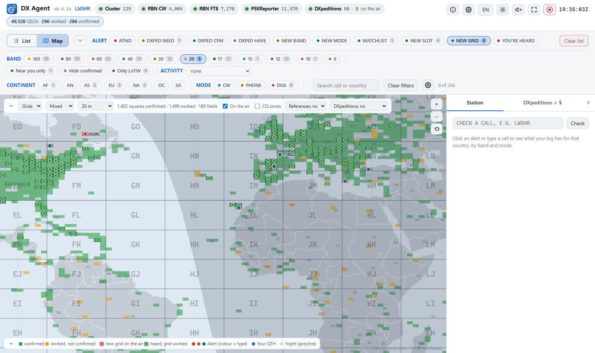
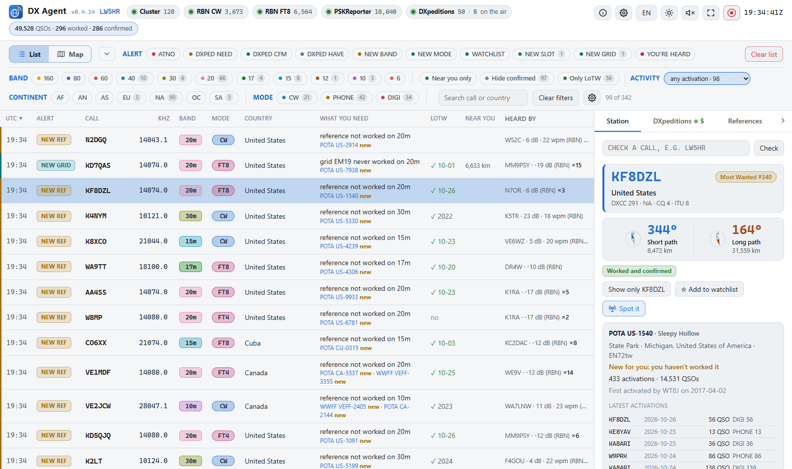

DX Agent
It watches the DX cluster and the Reverse Beacon Network, checks every spot against your log, and tells you the moment a station you still need is on the air: a new country, a new band or mode, a grid square, a DXpedition that adds something, a park or summit you have not worked.
Windows, Linux and macOS. Nothing to install: each package brings its own Python. Free and open source (MIT).
What it tells you
- ATNO, new band, new mode An alert only when working that station would actually add something: the country never worked, the band or the mode you are missing, or a combination you do not have.
- Grid squares, as GridTracker The squares you worked and confirmed on the map (VUCC, FFMA), the stations heard with a locator in their square, and a NEW GRID alert when a square you still need on that band is on the air.
- Your awards on the map DXCC (Mixed, by mode or band, Satellite, Challenge) and WAZ (5BWAZ too), each country or zone painted confirmed, worked or missing; click a country to see what you have of it.
- DXpeditions worth your time Announced DXpeditions from NG3K, 425 DX News and Club Log, each one saying whether it adds an entity, a band or a mode for you, and whether you are already in their online log.
- Your watchlist, and your stations Calls you always want to hear, with wildcards, plus the exact callsigns you are chasing.
- POTA, SOTA, IOTA, WWFF Summits, parks and islands, marked new when you have not worked them on that band.
- Near you Whether the station is being heard by receivers close to your own station (RBN, cluster, PSKReporter live, and your own WSJT-X's decodes), so you know if the path is open to you.
- Who hears you Your own call spotted: which skimmers hear you, how far away and in which country, on the list and the map.
- CQ DX Marathon Your score for the year or the Sprint, the countries and CQ zones still missing, and an alert when one of them is on the air.
- Several callsigns Each with its own log; alerts and awards for all of them together, or for the one you pick.
- One click to the radio Tune to the spot from the dashboard: Log4OM, N1MM, DXLog.net, OmniRig, Hamlib, flrig, DXLab, WSJT-X or TCI (a FlexRadio on AetherSDR, with the alerts on its panadapter; in testing). And Spot it posts a spot to the DX cluster.
Screens






Works with what you already use
Reads the ADIF file of any logger — WSJT-X, Log4OM, N1MM Logger+, DXLog.net, Ham Radio Deluxe, DXLab… — and your LoTW confirmations. A QSO you just saved is taken into account in seconds: straight from Log4OM 2's database, or over UDP from N1MM, DXLog.net, Log4OM and WSJT-X. Your settings and data stay on your computer.
Python 3.11+ standard library only: no accounts, no cloud, no telemetry.
Install
- Download the latest version from the releases page.
- Windows: unzip
dx-agent-<version>-windows.zipand double-clickstart-dx-agent.bat.
Linux (x86_64): unpackdx-agent-<version>-linux-x86_64.tar.gzand run./start-dx-agent.sh.
Mac: unpackdx-agent-<version>-macos.tar.gzand double-clickstart-dx-agent.command. - The dashboard opens in your browser at
http://localhost:8073. Open Settings and set your callsign and the path to your ADIF log.
Questions
Do I need to install Python?
No. Each package brings its own Python: you unpack it and start it. Nothing else to install.
Does it use my LoTW confirmations?
Yes. With your LoTW password it downloads your confirmations and merges them with your log, so an entity counts as confirmed even if your logger has not synced it yet. It can also use your LoTW uploads as the log, with no ADIF file at all.
Which loggers does it work with?
Any program that writes an ADIF file. With Log4OM 2 a QSO is read straight from its database within about 10 seconds; QSOs that N1MM Logger+, DXLog.net, Log4OM or WSJT-X send over UDP count at once.
What are the DX cluster and the RBN?
The DX cluster is where radio amateurs announce the stations they hear. The Reverse Beacon Network is a worldwide set of automatic receivers that decode CW and digital modes and report every station they hear. DX Agent listens to both and keeps what matters to your log.
Does it show grid squares like GridTracker?
Yes. The map's Grids view paints the Maidenhead squares you worked and confirmed (VUCC rules: one band for VUCC, 6 m for FFMA) and puts the stations heard with a locator in their square, from your WSJT-X's decodes and the RBN's FT8/FT4 spots. A NEW GRID alert tells you when a square you still need on that band is on the air.
Windows, Linux or Mac?
All three, each with its own package. The Windows-only parts are Log4OM's live log and the Log4OM, N1MM, OmniRig and DXLab tuning targets; Hamlib, flrig and TCI work everywhere.
Is it really free?
Yes: MIT licence, no account, no telemetry, no cloud service. It runs on your computer.
More
- User manual — install, first setup, the screen, alerts, tuning the radio, your logger, DXpeditions, POTA/SOTA, the map and its grid squares, the CQ DX Marathon, LoTW.
- Technical documentation — every setting and how it works inside.
- All versions, with what changed in each one.
- Problems or ideas: issues.
- En castellano: página en español · manual.